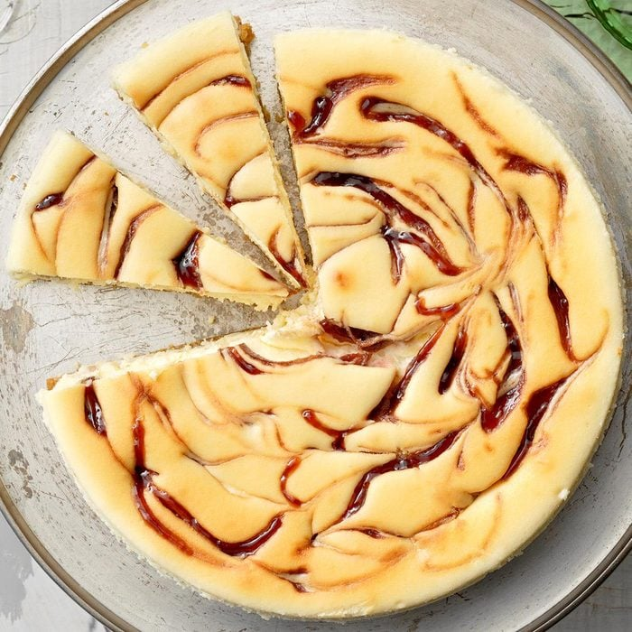

White Chocolate Raspberry Cheesecake

Delicious recipe and better than Starbucks original!
Ingredients:
- 85 gr Leibniz VK Cookies or Brandt Hobbits
- 50 gr granulated sugar
- 76 gr butter, melted
Ingredients filling:
- 230 gr cream cheese, room temperature
- 150 gr granulated sugar
- 82 gr sour cream
- 3 tablespoons all-purpose flour
- 1 teaspoon vanilla extract
- 3 large eggs, room temperature, lightly beaten
- 3 packs of Ruf Raspel Schokolade Weiss
- 80 gr seedless raspberry jam (Samt)
Steps:
- Preheat oven to 160 Celsius (Ober-/Unterhitze). In a small bowl, combine graham cracker crumbs, sugar and butter. Press onto the bottom of a greased 9-in. springform pan; set aside.
- In a large bowl, beat cream cheese and sugar until smooth. Beat in sour cream, flour and vanilla. Add eggs; beat on low speed just until combined. Fold in chips. Pour over crust.
- In a microwave, melt raspberry jam; stir until smooth. Drop by teaspoonfuls over batter; cut through batter with a knife to swirl.
- Place pan on a double thickness of heavy-duty foil (about 18 in. square). Securely wrap foil around pan. Place in a large baking pan; add 1 in. hot water to larger pan.
- Bake until center is just set, 80-85 minutes. Cool on a wire rack for 10 minutes. Carefully run a knife around edge of pan to loosen; cool 1 hour longer. Cover and refrigerate overnight. Remove side of pan.